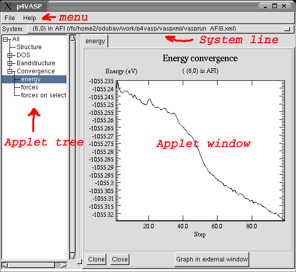
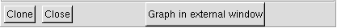
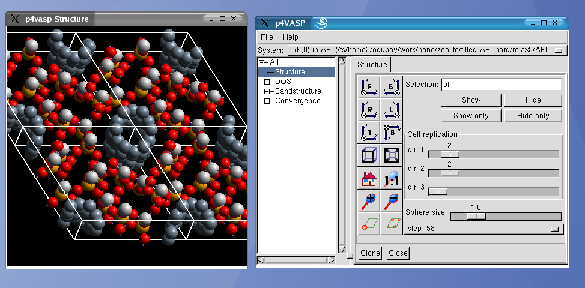
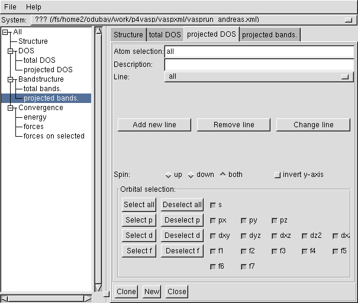
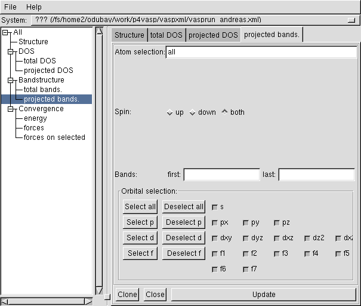

Introduction to
Author: Orest Dubay <dubay@ap.univie.ac.at>
The p4vasp package is a set of tools for processing xml-formatted
VASP output (i.e. vasprun.xml files).It comes with a gui
environment, that can be started from the command line by typing p4v.
After starting p4v, a window similar to this will appear:

It has several parts:
- Menu - the usual menu on top
of the window with File and Help. In the File menu
new systems can be loaded and the current setup can be stored.
- Applet tree - used to start
(activate) applets. It is a tree view of all available applets
(subprograms) that take care of particular tasks - e.g. displaying Energy
convergence (as shown in the picture). Applets are activated by
clicking on the desired tree node. Tree nodes marked with a +
contain sub-nodes, they can be expanded by clicking on the +
symbol and collapsed by clicking on -.
- System line - an option bar
showing the actual system (name from the SYSTEM tag from the INCAR
file and a path to the vasprun.xml file) In the system line it is
possible to switch between loaded systems.
- Applet window - shows the
output of the active applet and applet controls. The applet window is
initially empty, it will contain active applets (activated in the
applet tree).
Active applets are accessible as notebook-pages. Several applets can be
opened at the same time.
This is especially useful for comparing two or more different graphs
(e.g. DOS and bandstructure).
Most of the applets have several buttons at the bottom side of the
applet window:

- New - creates a new empty
applet (only in the partial DOS applet)
- Clone - creates a copy of the
applet including all settings
- Close - removes the applet
- Graph in external window
- used in applets that show a graph in the applet window. After
pressing this button a new window containing the same graph is opened.
External graph window has several advantages:
value reading and the possibility to export the data in different
formats.
Note: At startup p4v
loads the vasprun.xml (if available) from the directory where it
was started. Additionally it tries to load setup.xml (from the
same directory) which contains the configuration informations - active
applets and systems to open.
Parsing of the desired information is performed only when it is
required and it is cached for later use. This prevents a long delay
that would be required for parsing "everything" and it saves some
memory too... On the other hand it causes delays when starting applets.
If the requested information is not available, applets usually show
nothing, which may lead to confusion. Check the console for
messages if you are not sure what is going on. (The GDK errors can be
safely ignored.)
Structure viewer

By clicking on Structure in the applet tree a structure viewer
is invoked. In the applet window some controlling elements are visible
and additionally a new external window showing the structure is opened.
Note: If no structure informations
is available, the external window does not open.
By starting the Structure applet all structure
information is parsed. This can take some time, especially for long
relaxation runs. Check the console.
In the external window the structure can be
- Rotated using the
left mouse button; use the control + left mouse
button for rotation around the axis perpendicular
to the screen plane.
- Translated using the middlemouse
button.
- Scaled using the right
mouse button.
Note: If the p4v is
running over a slow network using an X11 terminal emulation (as is the
case in the workshop), the structure viewer can be very slow. Making
the viewer window smaller can help a bit.
The button palette on the left side of the applet window controls
different views, perspective, zoom and atoms alignment within the cell.
In the Selection part chosen atoms (atom groups) can be hidden
and shown again. Atoms are selected using a simple selection language, e.g. all
means all atoms, Ca means all calcium atoms.
Using the Cell replication the unit cell can be repeated several
times to visualize periodic structures.
The Sphere size slider controls the size of atom balls.
Below the Sphere size slider there is a option where the final
or initial positions or a particular relaxation step can be chosen.
Update:
Note:
The picture above is outdated and does not show the Get, Put, Measure buttons and the Arrows part.
The atoms can be selected and deselected by positioning mouse over atom
in the viewer window and pressing Space.
A black spiral will be shown around the selected atom.
Other possibility is making the atom selection in the Selection entry
and pressing the Put button -
this will select all atoms written out in the selection.
The get button will do the opposite - convert the selected atoms into a
selection in the Selection entry.
Pressing Measure will write out
the distances, angles and dihedral angles between the selected atoms
(in the order of selection) in the separate window.
In the "Arrows" part one can select what kind of arrows are shown (if
any) and what is the size multiplication of arrows.
DOS
There are two applets in the DOS applet group: total DOS and projected
DOS. Displaying the total DOS is as simple as clicking on the total
DOS node in the applet tree. (See the section Graphs.)
Note: When no information about the
DOS or projected DOS is available, empty graphs are shown and a message
about missing information is printed out on the console.
In the projected DOS applet it is possible to show the density
of states projected on selected atom groups and orbitals.
Note: By starting the projected
DOS applet the projected DOS information is parsed, which can take
some time. Be patient.

Creating a new line:
- Select the desired atoms in the Atom selection entry using
the selection language (e.g. Ca
selects all calcium atoms, for more details see the section Selection language).
- You can put the description in the Description line. When
the line is empty, the description is generated automatically.
- Select the desired orbitals (and possible a spin projection).
- Click Add line.
The line can be changed or removed by selecting it from the Line
options and clicking on Change line or Remove Line.
Bandstructure
There are two applets in the Bandstructure applet group: total
bands. and projected bands. Displaying the total
bandstructure is performed by clicking on the total bands.
node in applet tree.
Note: By
starting the total bands. or projected bands.
applet the bandstructure information is parsed, which can take
some time. Be patient. Check the console for possible errors.
Using the projected bands. applet localized states can be
visualized. Select the desired atoms in the Atom selection
entry using the selection language,choose
the desired orbitals (and spin projection) and press the Update
button at the bottom of the window. Press the Update button after
every change of settings.

The weights are shown on the graph as yellow circles with a diameter
proportional to the weight.
K-points on the x-axis are ordered in the same way as
they are found in the input file. The spacing between them is
calculated as the distance from the last shown k-point.
Convergence
The convergence applet group can be used to check the geometry
convergence in relaxation runs. The energy applet
shows the energy convergence, the forces and forces on
selected applets show the convergence of forces.
On the graphs in the forces applets the average and maximal forces are
shown. The applets forces and forces on selected applets
are similar. Where the first-one shows the average and maximum forces
on all atoms, the second-one shows the average and maximum of the selected
components (in selective dynamics). This leads to different results
also when selective dynamics is not used because in the first case the
force magnitude is evaluated, while in the second case the absolute
value of the X,Y,and Z components contribute to the statistics.
Selection language
The selection language is a simple mini-language used in several
applets: in the Structure viewer
for showing/hiding atoms and in the projected DOS
and bandstructure. It will be explained by
examples:
- Ca - shows all calcium atoms. Warning: the case matters,
thus ca or CA will not work.
- 2 - select the second atom in the structure.
- 2-5 - select the atoms in the range from second to fifth
(i.e. 2,3,4,5).
- 2- -select every atom from the second one (2,3,4,5,6,...).
- -5 -select every atom up to the fifth (1,2,3,4,5).
- all - select all atoms.
- #1 - select all atoms of the 1st specie.
- Ca:1 - select the first calcium atom (terms like Ca:2-5,Ca:2-,Ca:-5
are also legal).
- #2:1 - select the first atom of the second specie (terms
like #2:2-5, #2:2-, #2:-5 work as well).
- C:3- Sc - select all carbon atoms starting from the
third, and all scandium atoms. Terms can be joined together (separated
by one or more spaces).
Graphs
Graphs in external and internal window can be controlled in the
following way:
- Operations are performed on that graph, which has the mouse
cursor within its bound.
- Pressing the arrow-keys moves the graph view.
- Pressing + and - zooms the graph. The same can be
achieved with the mouse scroll button.
- After pressing the Pos_1-key (Home-key on some
keyboards), the graph is scaled so that everything is visible.
- By pressing and draging the left mouse button one can select a
rectangular zoom area.
In some cases the graph is not scaled properly.
Pressing the Pos_1-key fixes this problem.
Note: Pressing Graph in
external window below the internal graph will create a new window
containing the same graph - external graph. Actions like reading values
and exporting can be performed in external graphs only.
The values can be read using the mouse. A red circle appears in
the graph around the data-point nearest to the mouse location. In the
graph a status line (only in external graphs) is shown:
G0: [1.2345 6.78910] set 0: point 135, [0.120000 0.567890]
The first bracket contains the mouse coordinates, the second bracket
are the coordinates of the data-point marked by the red circle.
Further information shows the graph number (G0), the set and the point
number of the marked data-point.
Note: If no data is shown or
the mouse is moving, only the first bracket is shown.
External graphs have the ability to export the data in different
formats. This is done by clicking on the Graph/Export menu.
This opens a small menu where the output file and format can be
selected:
- raw data - data is stored in a simple two- or three-column
format, that can be processed by other graphing utilities.
- XmGrace - output to XmGrace. This is a
preferable format if the XmGrace program is available.
- ps, eps, pdf - output to standard printable formats. This
can be used for quick printing, but it is not recommended for
production, because some graphs are not drawn correctly.
- Xfig - export to the standard Linux vector-drawing program
xfig. This format can be read by
some other vector-drawing programs, e.g. sketch.
- svg - (Scalable Vector
Graphics) - currently not working properly.